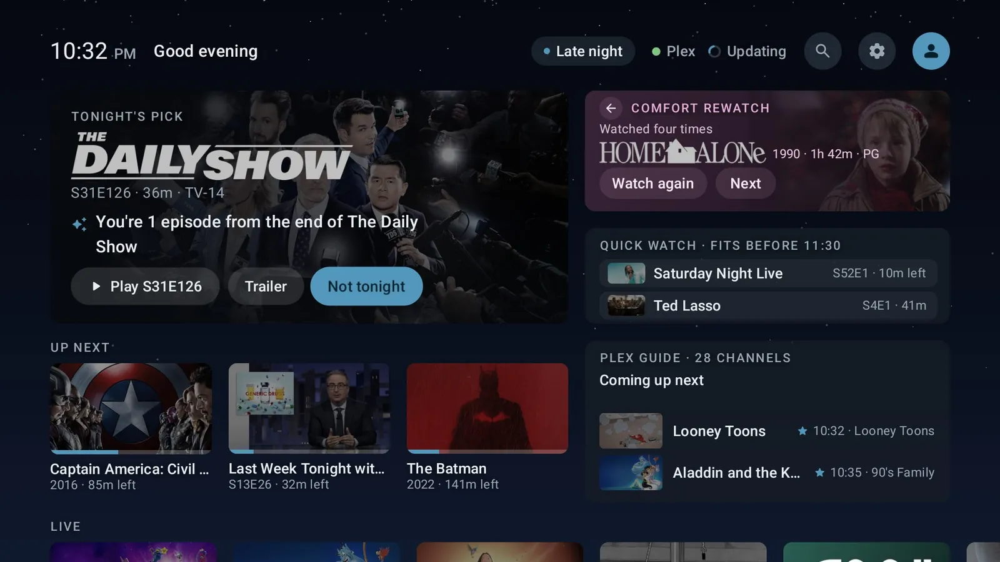
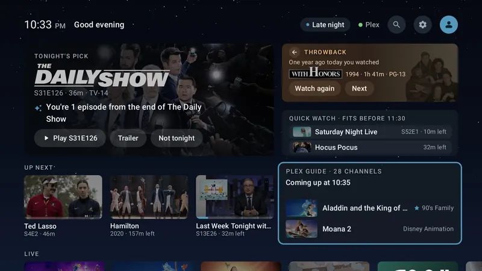
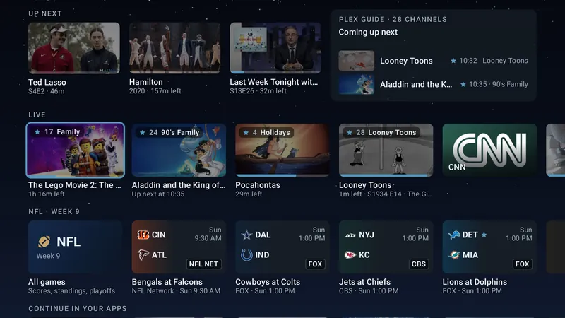
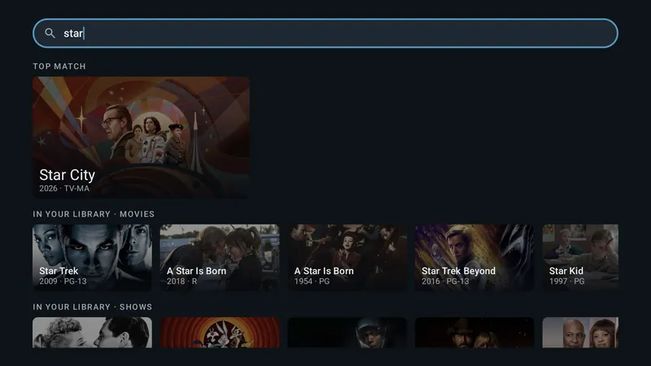
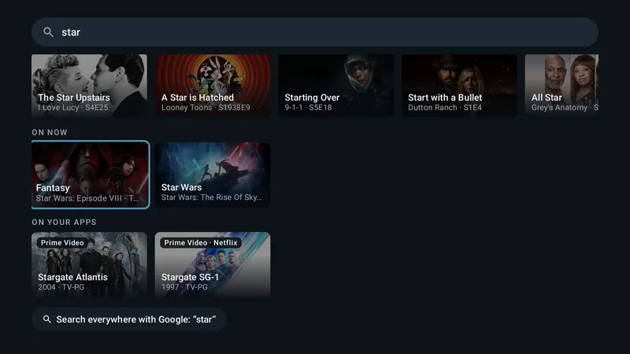
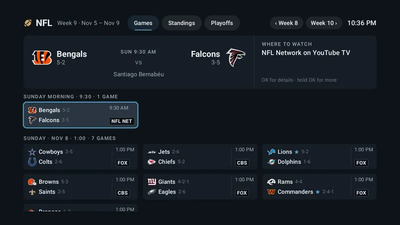
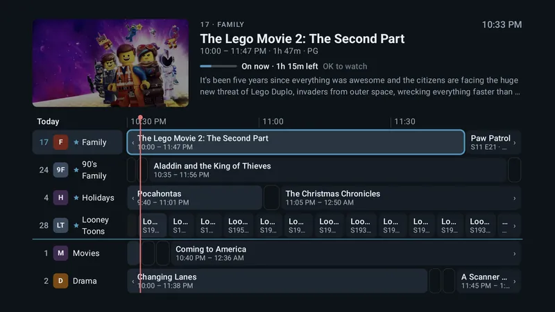

For NVIDIA SHIELD, Google TV and Android TV
An ad-free home screen for Android TV
Instead of rows of ads and app icons, Action Center shows a few cards that answer “what should we watch tonight?” from your own Plex library. It's free, open source, and built for the NVIDIA SHIELD TV.
- Free and open source (GPL-3.0)
- No ads, no tracking
- Android TV 11 and later
- Undo it with one command

What's on it
A home screen that answers one question
Every card renders from a cache on the TV first, so the home never waits on the network.
Tonight's Pick
One title from your library, with the reason it was picked (“You're 2 episodes from the end of the season”). Not tonight skips it and teaches the picker.
Throwback, Quick Watch, Up Next
Something you watched a year ago today, what fits before bedtime, and what you're most likely to carry on with.
The Plex Guide
Your library as live TV channels, with a full guide and a mini guide, pause and start over, and audio and subtitle choice. It plays inside the launcher.
The Live row
Your guide channels first, then YouTube TV's networks.
Search
One box for your library, what's on now, and titles on the streaming apps installed on your TV.
Profiles and kids
“Who's watching?” on wake. Kid profiles get a rating ceiling that moves up on each birthday, their own Plex user, and a kids' home.
The Apps row
Ordered by what you open at this time of day, with custom banners if you want them.
Optional extras
A guide station that gives every TV in the house one guide; NFL scores and standings, off until you turn them on; and one-line blurbs from Claude with your own API key, off by default.
The Plex Guide
Your Plex library, as live TV
The Plex Guide turns your movies and shows into channels that are always playing something, with a schedule, the way TV used to work. Some people call it pseudo live TV.
- Flip through channels, or open the full guide with your favorites first.
- Pause, start over, and pick audio and subtitles.
- Something hooks you? Carry on in Plezy or Plex from where the channel was.
- Edit the channels on the TV, or from your phone.
Screens
See it on a TV






Privacy
No ads. No tracking.
There's no analytics, telemetry, crash reporting or advertising. The app talks to Plex, to Open-Meteo for the weather, and to the optional services only once you turn them on. What leaves your TV
Safety
Hard to brick
A crash at startup opens safe mode, with All Apps and Settings still there. Every change the helper scripts make to your TV shows its undo first, and one command puts your old home screen back.
Open source
Read every line
The app, the guide station and the scripts are GPL-3.0. Releases are signed, and each one lists its SHA-256 so you can check what you install. Or build it yourself.
Before you start
What you need
- An Android TV 11 or later device on ARM. The NVIDIA SHIELD TV is the main target. Google TV devices, such as the Chromecast with Google TV, work through an optional accessibility service. Other Android TV devices should work, but haven't been tested. Check your device
- A Plex Media Server and a Plex account for most of the cards. Without Plex, the cards wait for a sign-in, while the apps, the weather and Settings still work.
- Optional: a computer with
adb, for the cleanest Home on a SHIELD, and an always-on Docker host for the guide station.
Questions
Common questions
Is it really free?
Yes. It's free and open source under the GPL-3.0, with no paid tier. Tips on Ko-fi support the project; they don't unlock anything.
Is it on the Play Store?
No. It's a hobby project you install yourself: with the free Downloader app on the TV, or with a computer. See Install.
Do I need Plex?
For most of the cards, yes: they're built from your Plex library. Without Plex, the apps, the weather and Settings still work.
Does it work on Google TV or a Chromecast?
Yes. Google TV's own launcher has to stay on, so an optional accessibility service, HomeWatch, sends the Home button to Action Center. See Does it work with…?
Does it work with Kodi or Jellyfin?
They show up in the Apps row like any app, but the cards need a Plex library. The details.
Can I go back to my old home screen?
Yes. With a computer, ./scripts/rollback-home.ps1 puts your previous Home back, even if Action Center won't start. Without one, turn HomeWatch off and uninstall the app.
Does it collect any data?
No. There's no analytics, telemetry, crash reporting or advertising, and this website has none either. See Privacy.